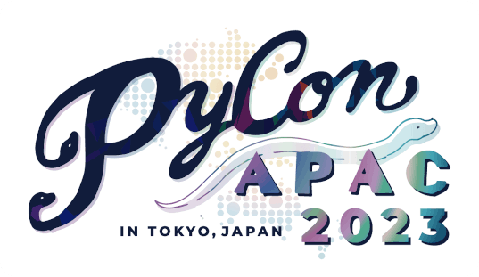
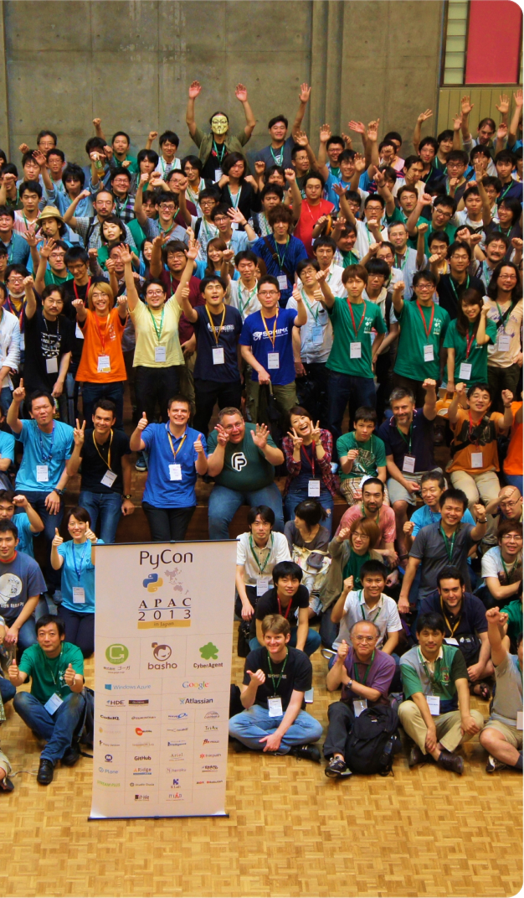
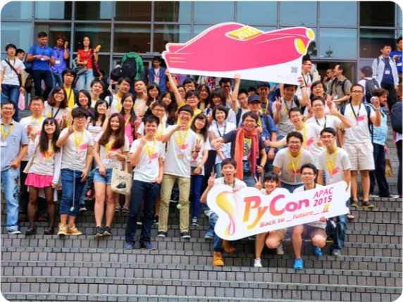
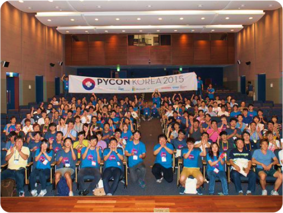
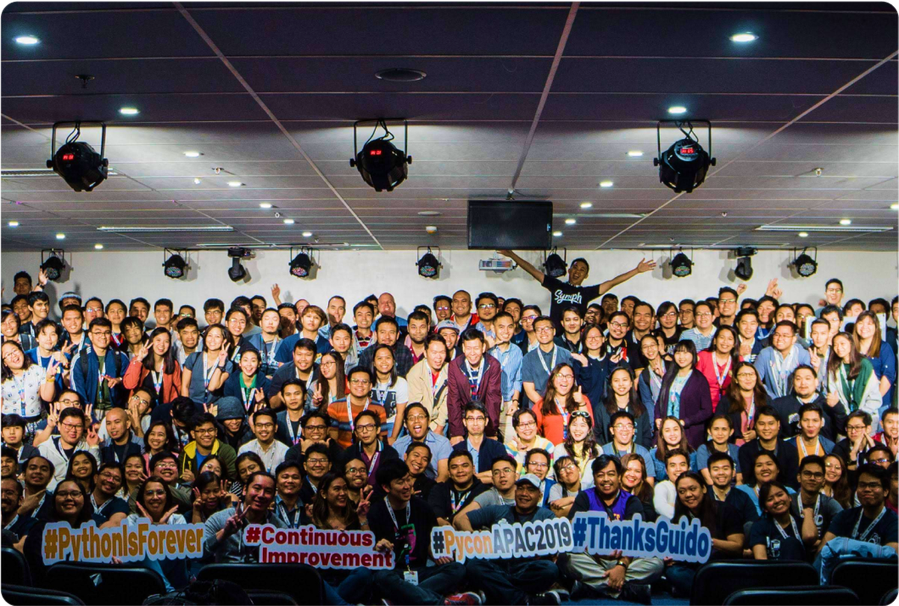
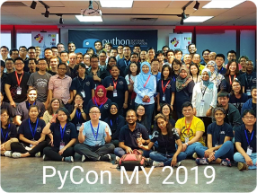
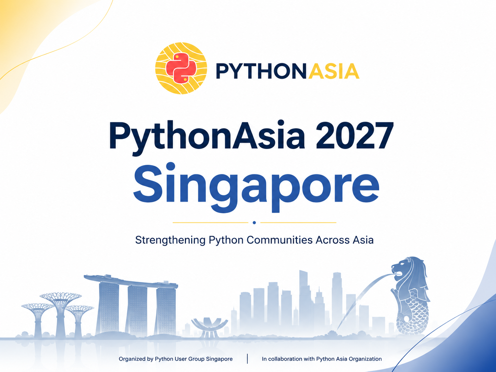
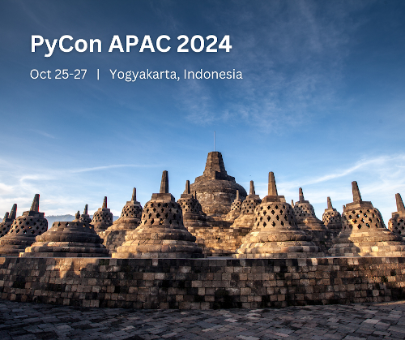
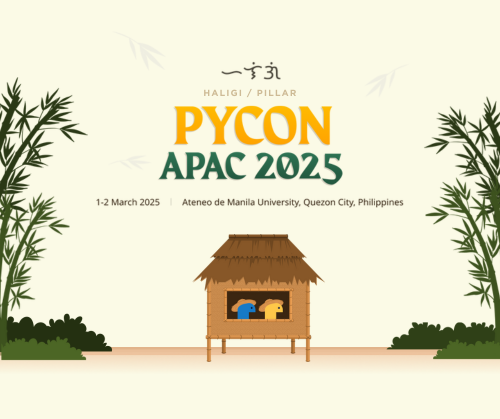
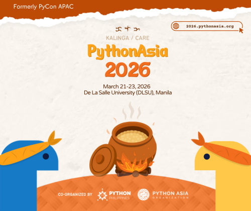

PyCon APAC 2023
Tokyo, Japan
Python events across Asia.
Discover conferences and community events across the region, from national PyCons to the annual Asia-wide PythonAsia conference.
pycon.asia is a community-maintained event directory of Python conferences and events across Asia. pythonasia.org is the official website of the Python Asia Organization (PAO).






Featured regional conference
The Asia-wide Python conference returns in 2027, hosted by the Python User Group Singapore in collaboration with Python Asia Organization (PAO).
Visit the event websitePlan ahead
Browse the latest conference dates and connect directly with each local Python community.
No events match your search. Try another country, event name, or year.
A short history of PythonAsia
PythonAsia is the annual Asia-wide Python conference formerly known as PyCon APAC. Each edition is hosted by a local Python community and co-organized with Python Asia Organization (PAO). Its host community changes over time, bringing the conference to Python communities in different countries across Asia.
It is distinct from national and city-based conferences. PyCon Japan, PyCon Korea, PyCon Thailand, PyCon Singapore, and other local events continue to use the PyCon name for their communities.
Visit the PythonAsia website
Tokyo, Japan

Yogyakarta, Indonesia

Manila, Philippines

Manila, Philippines · New identity
More than conferences
There is always a way to participate, whether you are learning your first line of Python or helping organize the next event.
Build practical skills with friendly, hands-on sessions led by community members.
Meet Pythonistas near you through meetups, talks, and community gatherings.
Know about an event or see something that needs updating? Help improve this shared resource.
Contribute on GitHubA community for everyone
We want every member of the Python community to have an enjoyable and fulfilling experience. Attendees, speakers, organizers, volunteers, and exhibitors are expected to show respect and courtesy.
Read the Code of Conduct